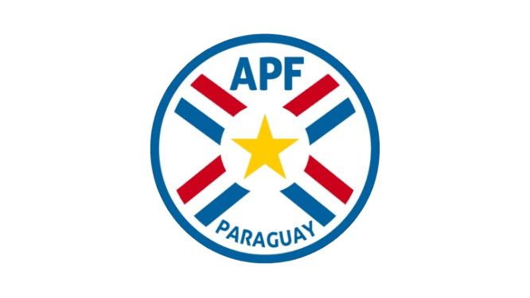
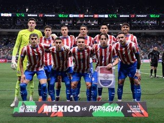
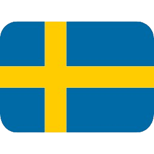
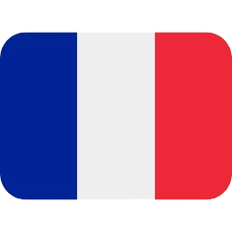

Paraguai
Paraguai
8
Participações
(1930-2010)

América do Sul
A história da Seleção Paraguaia de Futebol em Copas do Mundo é marcada pela raça, por uma sólida tradição defensiva e por momentos de grande competitividade, especialmente entre o fim dos anos 1990 e a década de 2010. Conhecida como La Albirroja, a equipe é uma das pioneiras do continente, tendo participado da histórica primeira edição do Mundial em 1930, no Uruguai. Após alternar aparições esporádicas nas décadas seguintes, o Paraguai viveu o seu período mais glorioso ao se classificar para quatro Copas consecutivas (1998, 2002, 2006 e 2010), impulsionado por lideranças marcantes como o lendário goleiro José Luis Chilavert e o zagueiro Carlos Gamarra. O ápice dessa era dourada aconteceu na África do Sul em 2010, sob o comando de Gerardo Martino, quando o Paraguai alcançou a melhor campanha de sua história ao chegar às quartas de final, sendo eliminado pela futura campeã Espanha em uma partida dramática que terminou em 1 a 0. Após ficar de fora das últimas edições, a seleção confirmou o seu retorno ao cenário mundial para a disputa de 2026.

Goleiros:
Defensores:
Meio-campistas:
Atacantes:
Participações
(1930-2010)
Títulos
Melhor campanha
Primeira
participação
| Ano | Sede | Resultado |
|---|---|---|
| 1930 |
|
Fase de Grupos |
| 1950 |
|
Fase de Grupos |
| 1958 |
 Suécia |
Fase de Grupos |
| 1986 |
|
Oitavas de Final |
| 1998 |
 França |
Oitavas de Final |
| 2002 |
|
Oitavas de Final |
| 2006 |
|
Fase de Grupos |
| 2010 |
|
Quartas de Final |
| Participações | 8 |
| Títulos | 0 |
| Vice-campeonatos | 0 |
| 3º Lugar | 0 |
| 4º Lugar | 0 |
| Melhor campanha | Quartas de Final |
| Jogos disputados | 27 |
| Vitórias | 7 |
| empates | 10 |
| Derrotas | 10 |

calendar_month Junho - Julho de 2026
location_on México, Estados Unidos e Canadá